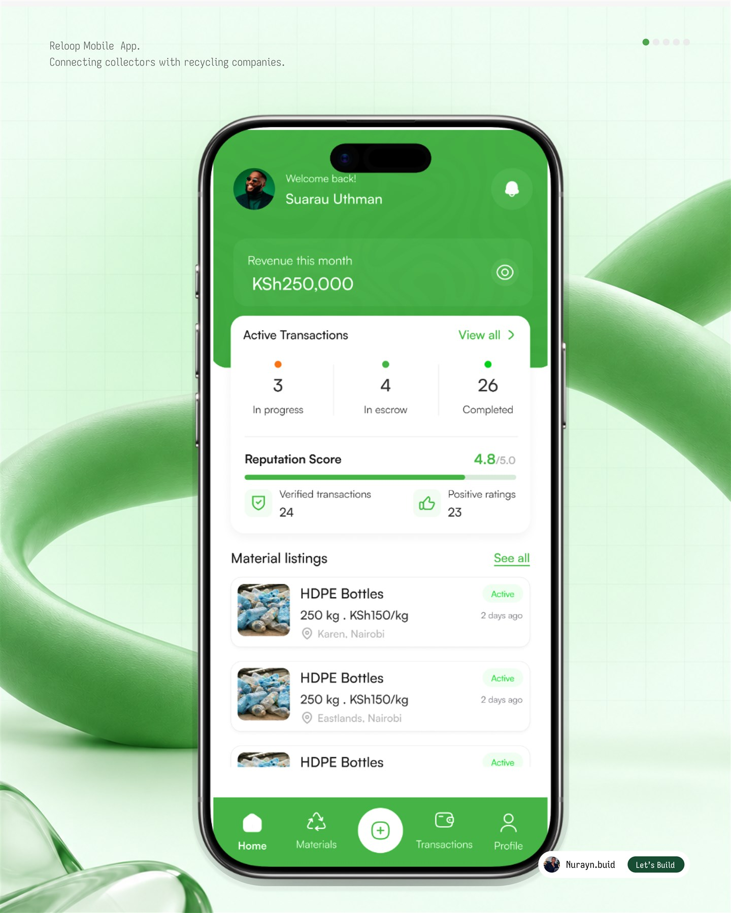
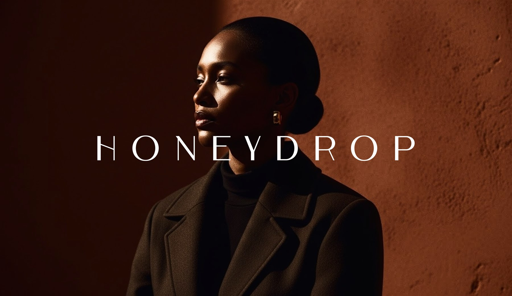
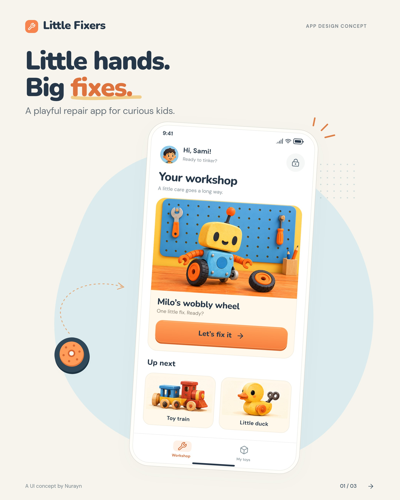
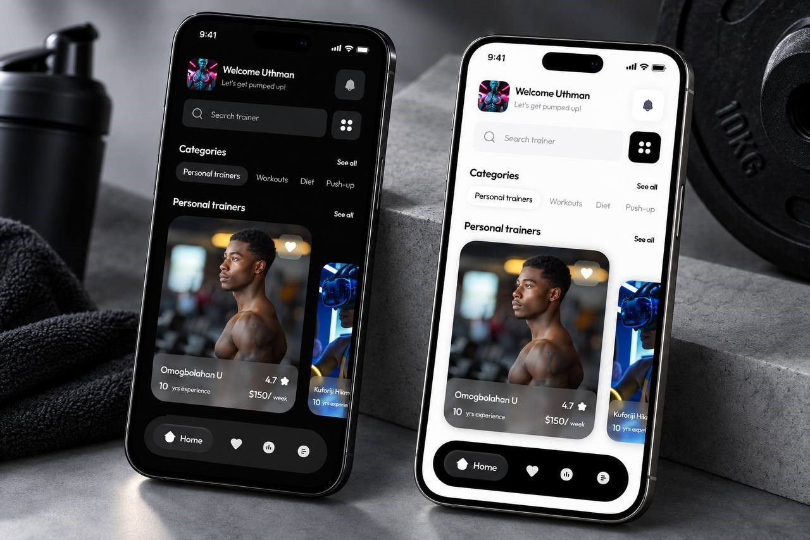

A DESIGN & DEVELOPMENT STUDIO A POINT OF VIEW, MADE TANGIBLE.
For brands with somethingAnd places to go.
BRAND IDENTITY ↙
IN FOCUS / RELOOPPRODUCT DESIGN · CIRCULAR ECONOMY
A BETTER WAY TO CONNECT Good thingsaround. Connecting people. 
Explore ↗ 01 / SELECTED WORK BRAND THINKING. PRODUCT FEELING.
01 / THE WAY WE SEE IT INSTINCT / 01
A little instinct. A lot of intent.
NURAYN / STUDIO NOTES Make ↗

✳ We give ideas a shape, a voice, and a life online. From the first mark to the last interaction, design and development happen in the same conversation.
Explore our approach ↗
02 / SELECTED PROJECTS INDEPENDENT THINKING. CONSIDERED DESIGN.
Selected work. Brand identities and digital products.
04 PROJECTS / EXPLORE THE DETAILS
Explore project ↗ 01 / CIRCULAR ECONOMY Mobile experience · Marketplace
01
PRODUCT DESIGN Reloop Connecting collectors with recycling companies. View project ↗
02
BRAND IDENTITY Honeydrop A modern expression of African luxury. View project ↗
03

PRODUCT DESIGN Little Fixers A little thinking. A little tinkering. View project ↗
04

DIGITAL PRODUCT PACE Good movement starts with the right guidance. View project ↗
↔ Swipe to explore, or use the arrows.
01 / 04 ← →
View project ↗ 01 / CIRCULAR ECONOMY
Reloop Mobile experience · Marketplace
View project ↗ 02 / AFRICAN LUXURY
Honeydrop Identity · Art direction
View project ↗ 03 / PLAY & LEARNING
Little Fixers App concept · Interaction
View project ↗ 04 / FITNESS & WELLBEING
PACE Mobile interface · Theme systems
01 Reloop 02 Honeydrop 03 Little Fixers 04 PACE
A CLOSER LOOK / HONEYDROP THE SPACE BETWEEN MARK & MOOD
Recognition.Then feeling. A distinctive mark is the beginning.
03 / CONNECTED DISCIPLINES FROM THE WAY IT LOOKS TO THE WAY IT WORKS.
One conversation.Many possibilities. We bring brand, product and development into the same room. So the idea stays clear, wherever it goes.
01 Build a brand. IDENTITY · ART DIRECTION · GUIDELINES ↗ 02 Shape a product. UX · INTERFACE · DESIGN SYSTEMS ↗ 03 Make it move. WEBSITES · DEVELOPMENT · INTERACTION ↗
A visual language with its own point of view. Designed to hold together, from the smallest mark to the biggest expression.
See it in Honeydrop ↗
04 / THE OPEN STUDIO EXPERIMENTS IN IDENTITY, INTERFACE & MOTION.
Your turn. ✳ The best way to understandGet your hands on it.
01 Make a mark ↗ 02 Change the view ↗ 03 Find the feeling ↗
INDEPENDENT SOUND VOL. 001
ONDA
MEMBERS / 001 ONDA SOUND BRINGS US TOGETHER.
● ● ● onda.studio / a live layout 720 PX
ONDA RELEASES ABOUT BAG (0) INDEPENDENT SOUNDS / VOL. 01 Sound,with feeling. Add the first pressing ↗ A small demo. A real, responsive interface.
01 / FIRST PRESSING MADE TO BE PLAYED.
↔
ONDA / THE LISTENING ROOM ONDA SIDE A
GRAB. TURN. LET GO. 00.0 RPM THE MOTION DESK It’s all Drag the record and release it. Its momentum carries on, then gently settles.
Give it a spin ↗ Bring it to a stop ↙ KEYBOARD: ← / → TO TURN
05 / HOW WE GET THERE CLOSE COLLABORATION. ROOM FOR DISCOVERY.
Good workwhy. The conversation changes from project to project. The care stays the same.
? 01 / FIND THE QUESTION
01 Listen closely. + Understand the people, the ambition and the problem worth solving. Get to a clear direction before getting attached to a beautiful answer.
CONVERSATION / RESEARCH / DIRECTION 02 Find the character. + Explore the visual language and the experience together. Make, compare and refine until the idea has a point of view of its own.
IDENTITY / PROTOTYPES / EXPLORATION 03 Make every detail count. + Carry that character into the finished experience. Build, test and tune the details that make it feel considered in somebody else's hands.
DEVELOPMENT / TESTING / HANDOVER